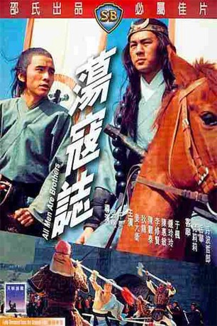
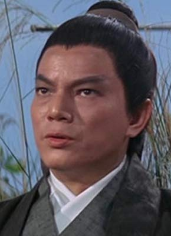
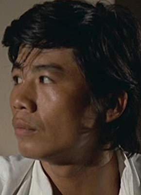
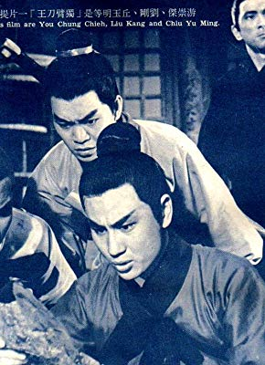
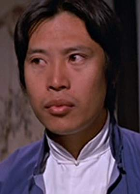

#6208 Die Eroberer
 
 IMDB-Wertung: 6.5 / 10
IMDB-Wertung: 6.5 / 10  Metascore: 0
Metascore: 0 
Durch Zufall lernt Schwertkämpfer Yen Ching den Kaiser kennen. Dieser bittet ihn, ihn gegen Rebellen zu verteidigen. Doch die sind übermächtig, schon dem ersten Angriff Yen Chings fallen viele seiner Männer zum Opfer. Auch eine zweite Attacke scheitert. Ein letztes Mal versucht Yen Ching, die mächtigen Gegner endlich zu schlagen.
Jahr: 1975
Dauer: 101 Minuten
FSK: 16
Land: Hong-Kong Studio: Avis-FilmverleihTonspuren:
Untertitel:
Auflösung: 1080p (1920x816) Größe: 5283 MB
Genre: Action, Abenteuer
Regisseur: Cheh Chang, Wu Ma
Drehbuch: Torsten Wenzel
Soundtrack:
Darsteller:
 Kuan Tai Chen als 'Tattooed Dragon' Shih Chen
Kuan Tai Chen als 'Tattooed Dragon' Shih Chen Mei Sheng Fan als 'Black Whirlwind' Li Kuei
Mei Sheng Fan als 'Black Whirlwind' Li Kuei Danny Lee als 'White Stripe' Chang Shun
Danny Lee als 'White Stripe' Chang Shun- Tetsurô Tanba als Jade Unicorn Lu Chun Yi
 Lung Ti als 'Tiger Killer' Wu Sung
Lung Ti als 'Tiger Killer' Wu Sung- Bolo Yeung als General Shi Hsing-Fang
- Wai-Man Chan als 'Twin Spears' Tung Ping
- Yang Chang als Emperor Tao Chun
 Chuan Chen als Wan Tien-tso
Chuan Chen als Wan Tien-tso- Feng Chen Chen als General Shih Pao
- Ti-Ko Chen als Guard
- Wo-fu Chen als 'Spearman' Hsu Neng
-  Lei Cheng als Short Tiger Wang Ying
 David Chiang als 'The Beau' Yen Ching
David Chiang als 'The Beau' Yen Ching- Feng Chin als 'Clever Star' Wu Yung
 Tien-Chu Chin als
Tien-Chu Chin als - Mu Chu als Emperor Fang La
 Paul Chun als 'Heroic star' Hua Yung
Paul Chun als 'Heroic star' Hua Yung- Betty Chung als Li Shih-shih
- Lily Ho als Lady Hu San Niang
 Pak-Kwong Ho als Canal sentry
Pak-Kwong Ho als Canal sentry- Wei Hu als
 Ha Huang als
Ha Huang als  Hsiung Kao als
Hsiung Kao als  Feng Ku als 'Welcome Rain' Sung Chiang
Feng Ku als 'Welcome Rain' Sung Chiang- Dan Lau als 'Winged Tiger 'Lei Heng
- Lok-Lam Law als Emperor Tao's Eunuch
- Lung Lei als 'Thunderclap' Chin Ming
- Yung Chieh Lei als Yuan 'the Second'
-  Heng Li als Tai Chung
- Wei Kai Li als 'Twin-headed Snake' Chieh Chen
- Shang Yun Liang als 'Redhead Devil' Liu Tang
-  Kang Liu als General Wan Tien-chou
 Wai Lo als Beautiful Beard Chu Kung
Wai Lo als Beautiful Beard Chu Kung- Peng Peng als 'Friar' Lu Chih Sheng
- Yen Tsan Tang als 'Short Life' Yuan Hsiao Yu
- Ching Tien als Prince Fang Tien-Ting
- Yung-chia Tseng als 'Twin-tailed Scorpion' Chieh Pao
- Lin Tung als General Teng Yuan-Hsuan
 Chung Wang als Shih Hsiu 'The Rash'
Chung Wang als Shih Hsiu 'The Rash' Kuang Yu Wang als Chang Ching
Kuang Yu Wang als Chang Ching- Kan Sheng Wei als Yuan 'the Seventh'
 Ching Wong als Minister Lu
Ching Wong als Minister Lu- Chi Chin Wu als 'Sick Tiger' Yang Hsiung
- Po-Chen Yang als
-  Tse Lin Yang als
- Feng Yu als Lady Sun Erh-niang
- Hua Yueh als 'Leopard Head' Lin Chung
Datei: X:\HD-Eastern-Classic(A-M)\Eroberer, Die (1975, FSK16, 1920x816).mkv seit 16.05.2017
Festplatte: HD Eastern+Western
 Es gibt insgesamt 63 Filme in der Gruppe 'HD-Eastern-Classic(A-M)'
Es gibt insgesamt 63 Filme in der Gruppe 'HD-Eastern-Classic(A-M)'